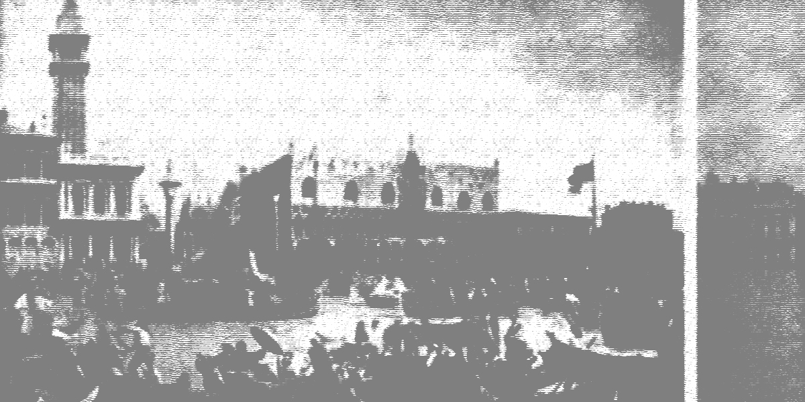
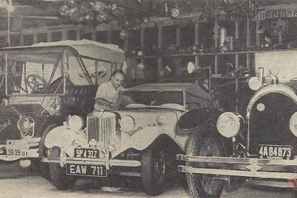
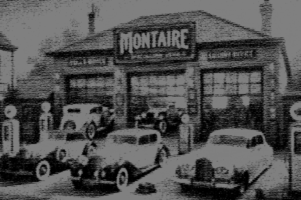
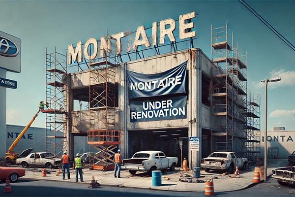
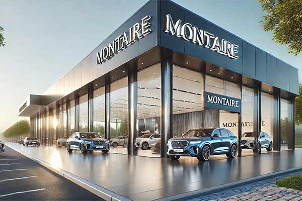

A Fundação de Lucio Montaire
Lucio Montaire fundou sua loja em 1897, em Veneza, Itália. Começando como uma pequena oficina de reparos de carruagens motorizadas, a loja logo se tornou referência para a venda de automóveis. Montaire era apaixonado por carros e dedicou sua vida à indústria automobilística, ajudando a popularizar veículos de luxo na região.
Inovações e Crescimento
Ao longo dos anos, Lucio Montaire introduziu inovações tecnológicas em sua loja, trazendo as últimas novidades em automóveis de luxo para Veneza. A loja não só vendia carros, mas também fornecia um serviço de manutenção especializado, que atraiu clientes de toda a Itália e Europa.
Marcos Importantes
1897 - Fundada em Veneza
Lucio Montaire abre as portas da sua oficina e inicia seu legado no mercado automobilístico.
1925 - Primeira Loja
Montaire passa a vender veículos de luxo de marcas como Alfa Romeo e Bugatti.

1950 - Referência
A loja se torna conhecida por vender e restaurar carros clássicos e de colecionador, atraindo entusiastas de toda a Europa.
1970 - Problemas Financeiros
Nos anos 70, a loja sofreu com diversos problemas financeiros, tendo que declarar falência em 1977.
1997 - Rumo a vitória
Noo aniversário de 100 anoos da marca, a loja voltou a ativa, voltando a ter o sucesso que sempre mereceu ter.
2020 - Consolidação
A loja Automotiva Lucio Montaire finalmente se consolidou como uma das maiores em meados de 2020.
